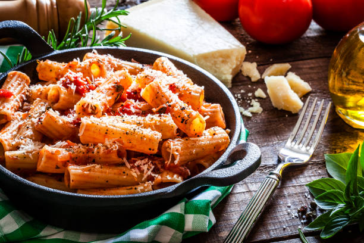
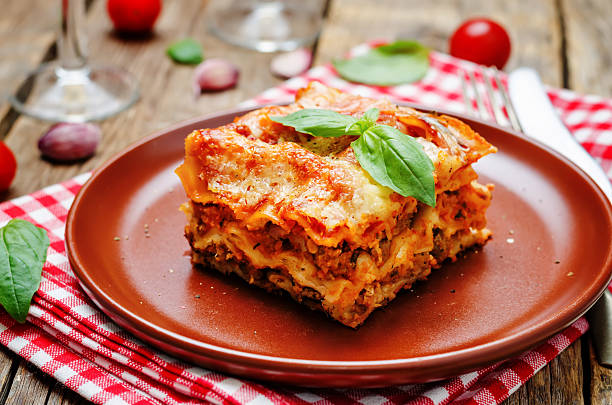
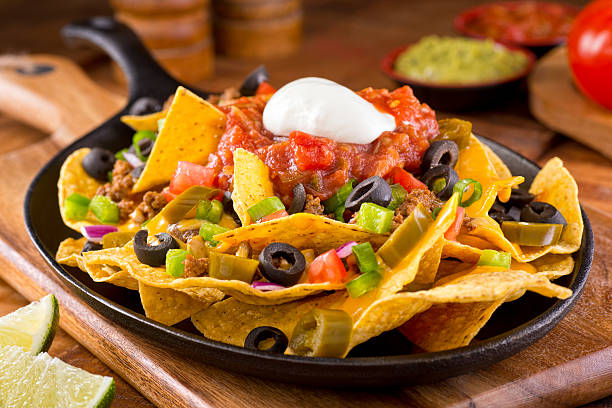

Kritika's Kitchen
Welcome to Kritika's Kitchen – your cozy corner on the internet for trying out delicious and easy-to-follow recipes from around the world.
Whether you're a beginner cook or a food enthusiast, our platform brings you authentic recipes from Indian, Chinese, Italian, Mexican cuisines and more. Each dish comes with step-by-step instructions, ingredients, preparation tips, and even video links for guided cooking.
Kritika's love for cooking started in childhood, experimenting in the kitchen and learning family recipes. This website is her way of sharing that joy with the world – making cooking approachable, fun, and full of flavor!
Happy Cooking!
Desserts
Indian
Samosa
VegAll-purpose flour (maida), boiled potatoes, green peas, cumin seeds, ginger, green chilies, coriander powder, garam masala, salt, oil, and water.
Prepare a dough using flour, salt, and oil. Cook the filling with mashed potatoes, peas, and spices. Roll dough into small discs, fill with the potato mixture, and shape into triangles. Seal edges and deep fry until golden.
Serve hot, garnished with chopped coriander leaves. Best enjoyed with mint chutney or tamarind sauce.
Hyderabadi Biryani
Veg Non-VegBasmati rice, chicken/mutton or vegetables, onions, tomatoes, yogurt, garlic-ginger paste, mint leaves, coriander leaves, saffron, ghee, whole spices (bay leaf, cloves, cardamom).
Cook meat or vegetables with spices and yogurt. Parboil rice with whole spices. Layer rice and meat mixture in a pot, top with saffron milk and ghee, seal, and cook on low flame (dum method).
Garnish with fried onions and fresh coriander leaves. Serve hot with raita (yogurt sauce) or salad on the side.
Idli Sambhar
VegFor idli: rice, urad dal, fenugreek seeds, salt.
For sambhar: toor dal, tamarind, vegetables (carrot, drumstick), mustard seeds, curry leaves, dried red chilies, sambhar powder.
Soak and grind rice and dal for idli, ferment and steam in idli molds. For sambhar, cook toor dal and vegetables, temper with spices, add tamarind pulp and sambhar powder.
Serve hot idlis with sambhar and coconut chutney. Drizzle ghee on top for added flavor.
Chinese
Manchurian
Veg Non-VegGrated cabbage, carrot, chopped spring onions, all-purpose flour (maida), cornflour, black pepper, salt, ginger-garlic paste, soy sauce, vinegar, chili sauce, and oil for deep frying.
Mix the grated vegetables with maida, cornflour, salt, and pepper to form a dough. Shape the mixture into small balls. Deep fry them until golden brown. In a separate pan, heat oil and sauté garlic, then add soy sauce, chili sauce, vinegar, and a splash of water. Stir in the fried balls and toss them well in the sauce.
Serve hot, garnished with chopped spring onions. Best enjoyed with fried rice or noodles. You can drizzle extra sauce over the Manchurian balls before serving.
Hakka Noodles
VegBoiled Hakka noodles, julienned capsicum, shredded cabbage, sliced carrots, chopped spring onions, soy sauce, chili sauce, vinegar, black pepper, oil, and salt
Cook the noodles and set aside. Heat oil in a wok, stir-fry garlic and vegetables on high flame for a few minutes. Add soy sauce, chili sauce, vinegar, salt, and pepper. Add the noodles and toss everything together quickly on high heat until evenly mixed.
Garnish with spring onion greens. Serve hot with Manchurian or chili paneer on the side. You can also top with sesame seeds or crushed peanuts for added crunch.

Fried Rice
VegCooked rice (preferably cold), chopped carrots, beans, peas or sweet corn, spring onions, garlic, soy sauce, vinegar, chili sauce (optional), salt, pepper, and oil.
Heat oil in a pan or wok. Add garlic and sauté the vegetables on high flame until slightly tender. Add soy sauce, vinegar, salt, and pepper. Stir in the cooked rice and toss gently until everything is evenly coated and heated through.
Garnish with fresh spring onions. Serve hot with any Chinese gravy like Manchurian or chili tofu. A dash of lemon or side of cucumber salad complements the flavors well.
Italian

Pasta
VegPasta (penne, fusilli, etc.), olive oil, garlic, onions, tomatoes or tomato sauce, basil, chili flakes, salt, pepper, cheese.
Boil pasta until al dente. In a pan, sauté garlic and onions in olive oil, add tomato sauce and seasonings. Mix in cooked pasta and toss well.
Garnish with grated cheese and fresh basil. Serve with garlic bread or salad.
Pizza
VegPizza dough, tomato sauce, mozzarella cheese, toppings (vegetables, chicken, olives, etc.), oregano, chili flakes.
Spread tomato sauce over rolled dough, add cheese and toppings. Bake in a preheated oven until crust is golden and cheese is melted.
Slice and serve hot with ketchup, chili flakes, and oregano on the side.

Lasagna
Veg Non-VegLasagna sheets, ricotta cheese, mozzarella cheese, parmesan cheese, marinara sauce, garlic, onion, ground beef (or vegetables), olive oil, salt, and pepper.
Preheat the oven to 375°F (190°C). In a pan, sauté garlic and onion in olive oil until translucent. Add ground beef (or vegetables) and cook until browned. Stir in marinara sauce and let simmer. In a baking dish, layer lasagna sheets, ricotta cheese, meat sauce, and mozzarella cheese. Repeat layers and top with parmesan cheese. Cover with foil and bake for 25 minutes, then uncover and bake for an additional 15 minutes until bubbly.
Garnish with fresh basil leaves. Serve hot with a side salad and garlic bread. A sprinkle of red pepper flakes can add a nice kick.
Mexican
Taco
Veg Non-VegCorn tortillas, cooked and seasoned ground beef (or beans), shredded lettuce, diced tomatoes, grated cheese, sour cream, and salsa.
In a skillet, cook the ground beef (or beans) over medium heat until browned. Drain excess fat. Add taco seasoning and water, simmering until thickened. Warm corn tortillas in a dry skillet or microwave. Assemble tacos by placing the meat mixture on tortillas and topping with lettuce, tomatoes, cheese, sour cream, and salsa.
Serve hot, garnished with chopped cilantro. Offer lime wedges on the side for squeezing over the tacos. These tacos pair well with Mexican rice and refried beans.

Burritos
Veg Non-VegFlour tortillas, cooked and seasoned shredded beef (or chicken), refried beans, shredded cheese, lettuce, diced tomatoes, sour cream, and salsa.
In a skillet, cook the shredded beef (or chicken) over medium heat until heated through. Warm the flour tortillas in a dry skillet or microwave. Assemble burritos by placing the meat mixture on tortillas and topping with refried beans, cheese, lettuce, tomatoes, sour cream, and salsa. Roll up tightly and serve.
Garnish with chopped cilantro and serve with lime wedges. These burritos pair well with Mexican rice and refried beans.

Nachos
VegTortilla chips, shredded cheese, jalapeños, black beans, diced tomatoes, green onions, sour cream, and guacamole.
Preheat the oven to 375°F (190°C). Spread tortilla chips on a baking sheet. Top with shredded cheese, jalapeños, black beans, diced tomatoes, and green onions. Bake for 10-15 minutes until the cheese is melted and bubbly. Serve with sour cream and guacamole.
Garnish with fresh cilantro and serve with lime wedges. These nachos pair well with a side of salsa and guacamole.